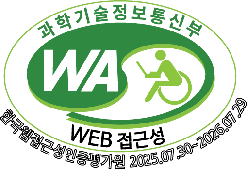
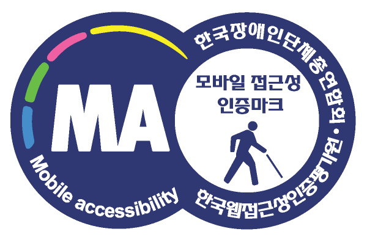

뱅크잇 Renewal
웹 접근성·앱 접근성 심사 통과 및 하이브리드 웹앱 구조 개선
- Web Accessibility
- Hybrid App
- Component Design


WEB PUBLISHER
7년 이상의 실무 경험을 바탕으로 UI 마크업, 웹 접근성, 인터랙션 개발, 유지보수까지 담당하고 있습니다.
프로젝트 보기
새롭게 배운 기술이 실제 서비스에 적용되어 사용자 경험이 나아지는 순간,
가장 큰 보람을 느낍니다.
디자이너·기획자·백엔드 개발자와 함께 고민하고 의견을 나누며
프로젝트의 처음과 끝을 완성한 경험이 지금의 저를 만들었습니다.
모르는 건 솔직히 인정하고, 아는 건 아낌없이 나눕니다.
서로의 강점이 맞물릴 때 혼자서는 닿지 못할 것들이 가능해지고
그런 팀이 결국 더 좋은 서비스를 만든다는 믿음으로 일합니다.
웹 접근성·앱 접근성 심사 통과 및 하이브리드 웹앱 구조 개선


반응형 마이크로 사이트 제작 및 YouTube 연동·관리자 기능 개발
프론트 UI·어드민 기능 개선부터 AI 활용 백엔드 수정까지, 서비스 유지보수 프로젝트
GSAP와 Lenis를 활용한 인터랙티브 사이트 리뉴얼
ScrollMagic 기반 스크롤 인터랙션과 SVG 인트로 애니메이션 마이크로 사이트
웹 접근성과 사용자 경험을 함께 고민할 팀을 기다리고 있습니다.
좋은 서비스는 좋은 협업에서 비롯된다고 믿기에,
함께 성장할 수 있다면 어떤 연결이든 소중히 여기겠습니다.